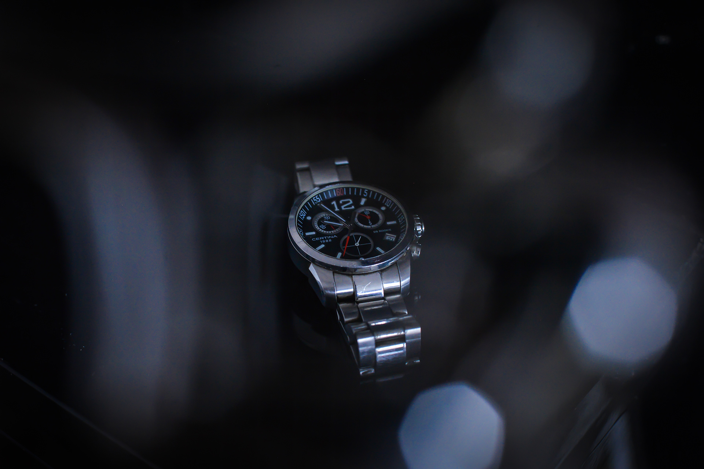
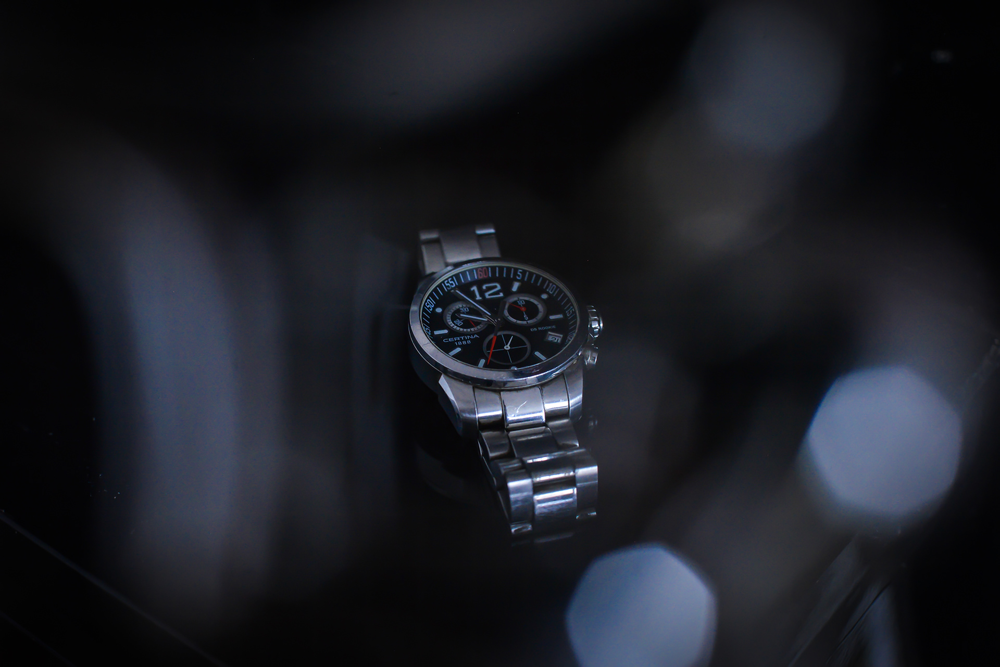
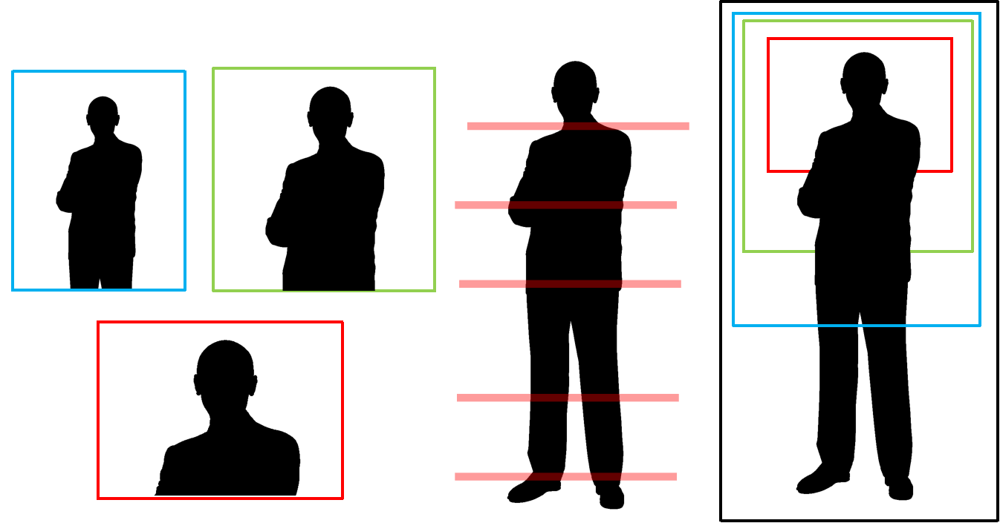

TEHNICA FOTOGRAFICĂ
O fotografie ”Corectă” este rezultatul a 4 lucruri: Sensibilitate senzorului/filmului, Timpul de Expunere, Deschiderea Diafragmei și Sursele de lumină.
O combinație ”corectă” a acestor elemente va rezulta într-o fotografie ”corect expusă”, adică nici prea luminată, nici prea întunecată, dar nu neapărat una frumoasă. Fiecare dintre aspectele enumerate anterior au ca scop principal obținerea unei imagini mai luminate sau mai întunecate, însă fiecare vine însoțită de câte un efect advers.
Acestea sunt lucrurile ce diferențiază o imagine ”corectă” de una frumoasă, unică și îndradevăr demnă de denumirea de ARTĂ.
Timp de Expunere
Timpul de expunere se referă la perioada în care senzorul (sau filmul) este expus la lumină. O expunere mai lungă va rezulta într-o fotografie mai luminată.
Folosirea unui timp lung de expunere rezultă ca orice mișcare care se petrece în cadru să nu fie ”înghețată”, ci să fie surprinsă ca o ”urmă” pe imagine.
Un clasic exemplu ar acestui efect este fotografia de tip ”light painting”, însă există multe alte moduri unice de a beneficia de acest efect advers al timpului lung de expunere.

De menționat este că un timp foarte scurt de expunere ( 1/2000 secunde ) este folosit pentru poze sportive, sau în general situații în care mișcarea este una foarte rapidă deoarece pe o perioadă așa scurtă de timp până si elicea un elicopter ar părea statică.


Deschiderea Diafragmei
În interiorul orcărui obiectiv foto există un set de lamele metalice care se pot închide sau deschide rezultând în pătrunderea a mai multă sau mai puțină lumină. Valoarea asociată deschiderii diafragmei este cunoscută mai uzual ca F-stop ( f1.8, f16 ), o valoare mai mică însemnând o deschidere mai mare.
O consecință a unei diafragme mai deschise este o ”plajă focală” sau ”profunzime de câmp” redusă. Prin acest lucru ne referim la regiunea din fața și spatele punctului în care este focalizată imaginea în care fotografia este clară.
Exemplul cel mai întâlnit este efectul de ”bokeh” sau ”blur de fundal” întâlnit în majoritatea portretelor.
Un f mare este folosit în principal în imagini unde avem nevoie ca mai multe subiecte aflate la distanțe diferite de aparat să fie clare. În general peisagistica necesită o diafragmă închisă la maxim.
Sensibilitatea Senzorului
Senzorul cât și filmul au o proprietate numită sensibilitate la lumină. Atunci când setăm sensibilitatea, numită în mod uzual ca ISO, la o valoare mare, senzorul va capta lumina chiar și când aceasta este foarte slabă, precum noaptea.
Un efect nedorit al ISO-ului foarte ridicat este ”zgomotul”. Acest termen se referă la un efect similar unui televizor vechi fără semanl, pe scurt, calitate inferioară a imaginii.
In general se vor alege celălalte setări iar ISO-ul va fi cea mai mică valoare posibilă care va produce o imagine corect expusă.
Lumina
Acest termen face referire la sursele de lumină din natură sau diversele lumini de studio ce ne pot ajuta în obținerea unor umbre și zone luminate inedite, deoarece acestea oferă tridimensionalitate imaginii.
Sunt multe moduri în care pot fi utilizate luminile, mai jos fiind câteva dintre ele.
Obiective
Obiectivele sunt ceea ce determină cât de aproape sau departe va apărea imaginea surprinsă de aparatul foto, așa zisul: ”zoom”. Tipul de obiectiv, f-ul minim, distanța focală și multe alte caracteristici sunt cele ce determină cărui tip de fotografie îi este destinat un obiectiv și ce fel de imagini te poți aștepta să obții.
ARTA FOTOGRAFICĂ
Arta fotografică se referă la toate elementele vizuale ce fac o fotografie frumoasă, sau atractivă ochiului uman, precum: compoziția, culoarea, tipul de lumină, textura, subiectul, încadrarea etc...
În principal, arta fotogragică se referă la creativitate, deoarece imaginile nu sunt doar culori aruncate la întâmplare, rolul lor este să spună o poceste. Cu cat mai multă imaginație, cu atât mai interesante imaginile. Însă, există niște concepte de bază care să vă ajute în a creea fotografilor mai frumoase.
CELE 3 PLANURI
O fotografie poate să fie împărțită în 3 planuri, cel apropiat (foreground), cel de mijloc si fundalul (background). Poziționarea subiectelor în cele 3 planuri concuce privirea către punctul de interes din imagine.
Deasemenea, locația subiectului transmite sentimente diferite, de exemplu singurătate ( subiect singur în planul de fundal, sau frică și claustrare ( subiect apropiat, fără spațiu între acesta și marginile imaginii )

 

FIGURĂ ȘI FUNDAL
În fotografie ne putem flosi atât de ceea de reprezintă subiectul, dar și de fundal pentru a reprezenta noi perspective, asemenea faimoasei iluzii cu fețele care se sărută sau vaza.
Deasemenea siluetele sunt foarte apreciate deoarece sugerează mister fiind un element ce captivează privitorul.
REFLEXII
Dacă sunteți utilizatori de social-media, este imposibil să nu fi vazut fotografiile cu reflexii. Fie că este apă, oglinzi, geamuri, sau orice alt material lucios, acestea sunt foarte utilizate în fotografie deoarece aduc o perspectivă nouă, interesantă. Deasemenea adaugă simetrie imaginii umplând într-un mod plăcut spațiul liber din jurul subiectului.
LINII
Liniile au, în fotografie, rolul de a îndrepta privirea către subiect, de a ghida și a focusa, de a atrage atenția. De fiecare dată când aveți ocazia, folosițivă de ele.

PERIODICITATE
Elementele asemănătoare care se repetă atrag ochiul uman deoarece creează modele sau forme. Deasemenea lipsa unui element din șirul repetitiv atrage atenția făcând imaginea mai interesantă.


CULOARE
Culoarea poate părea atractivă și interesantă, dar cu toții suntem obișnuiți să vedem imagini color. Asta face ca atunci când culoarea lipsește sau când o singură culoare apare în imagine, această să fie mult mai captivantă.
Deasemenea, în fotografie se spune că: "culoarea fură". O imagine poate să fie expusă incorect, dar din cauza culorii să nu se observe. Se pot observa cele 2 imagini mult prea întunecate și cea lipsită de contrast, dar din cauza culorii nu se observă aceste "greșeli".
TEXTURĂ
Materialul și textura unui ascund detalii despre locul, vechimea și istoria acestuia.De exemplu un perete spart pe fundalul unui portret al unui om trist, sau petale de flori langă o rochie de mătase. Aceste detalii spun povestea din spatele unei imagini.


REGULA TREIMILOR
Cu siguranță ați auzit de regula treimilor dacă ați văzut orice "tutorial" sau articol despre fotografie. Aceasta spune că împărțind o imagine în treimi, intersecția acestora cât și ele în sine vor fi zone de interes.
Astfel, subiecte plasate în aceste zone vor fi mult mai interesante decât un subiect central. Poziționare pe dreapta sau pe stânga, direcția privirii subiectului, toate influențează semnificația imaginii.
COMPOZIȚIE
În fotografie este foarte important unde este plasat sbubiectul, cât și spațiul dintre el și margini.
În compoziția generală, important este ca subiectul sau subiecții să nu fie lipiți de margini sau extrem de depărtați de acestea.
În fotografia de potret sunt multe moduri de a surprinde subiectul, prim-plan-ul, bustul, poza completa, sau poza de detaliu doar la o parte specifică. O regulă de baze este să nu tăiați poza la nivelul articulațiilor, adică să nu fie marginea imaginii exact în dreptul genunchilor, sau gâtului.

CUVÂNT DE FINAL
În final, fotografia este doar despre creativitate, despre cum percepi tu ca și om lumea. Așa că cel mai bun sfat este să experimentați, fără să vă gândiți "dacă nu iese poza?", important este doar să vă distrați și să vă bucurați de această artă minunată care este fotografia.